第5章 原码反码补码和位运算
信息编码
机器数与真值
一个数在计算机中的二进制表示形式，被称为这个数的 机器数。
将带符号位的机器数对应的真正数值称为机器数的 真值。
为了区分正负数，机器数的最高位被用于存储符号，被称为 符号位：
- 正数：符号位为
0 - 负数：符号位为
1
如果计算机字长为 8 位：
+1 的机器数：00000001
机器数 00000001 的真值：+1
-1 的机器数：10000001
机器数 10000001 的真值：-1
教材提出问题：
如果电脑直接使用机器数进行运算，
(+1) + (-1)等于多少？
这也是引入反码和补码表示的重要背景。
原码
原码就是该数值的机器数，即：
- 最高位为符号位
- 其余位表示数值
这是人脑最容易理解和计算的表示方式。
例如：
[+1]原 = 00000001
[-1]原 = 10000001
在考虑符号位的前提下，8 位二进制原码的取值范围为：
[-127, 127]
反码
反码的表示方法：
- 正数的反码是其本身
- 负数的反码：在原码基础上，符号位不变，其余各位取反
例如：
[+1]原 = 00000001
[+1]反 = 00000001
[-1]原 = 10000001
[-1]反 = 11111110
补码
补码的表示方法：
- 正数的补码就是其本身
- 负数的补码：在反码基础上
+1
例如：
[+1]原 = 00000001
[+1]反 = 00000001
[+1]补 = 00000001
[-1]原 = 10000001
[-1]反 = 11111110
[-1]补 = 11111111
教材还列出特殊情况：
00000000 代表 0 的原码、反码和补码
10000000 代表 -128
教材描述：
-128 的反码：11111111
-128 的补码：10000000
补码运算示例
教材示例：使用补码计算 (+2) + (-2)。
2 - 2 = 2 + (-2)
0000 0010 原
1000 0010 原
0000 0010 反
1111 1101 反
0000 0010 补
1111 1110 补
----------------
1 0000 0000
最高位产生的进位舍弃：
0000 0000 补
0000 0000 反
0000 0000 原
= 0
在计算机中，所有的数均以 补码形式存在。
补码可以简化运算，把减法转换为加法。
正数：
原码 = 反码 = 补码
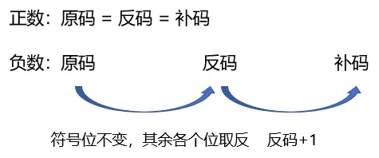
练习 1
1. 求 +119 的原码、反码和补码。
查看答案
原码：01110111
反码：01110111
补码：01110111
2. 求 -56 的原码、反码和补码。
查看答案
原码：10111000
反码：11000111
补码：11001000
3. 在 8 位二进制补码中，10101011 表示的数是十进制下的（ ）。
- A. 43
- B. -85
- C. -43
- D. -84
查看答案
答案：B
什么是位运算？
现代计算机中的数据都是以二进制形式存储的，每一位都可以存储 0、1 两种状态。
计算机对每一位进行的运算称为 位运算，教材强调符号位也共同参与运算。
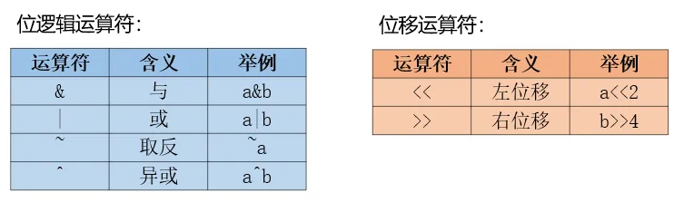
位逻辑运算符
位逻辑运算是将每个二进制位作为布尔值进行布尔运算，以逻辑中的真和假（1 和 0）作为运算单元，结果也为 1 或 0。
教材强调：
- 位运算是针对二进制位的运算
- 计算机中的数以补码形式存在
- 手工计算位运算时，需要先把数转换成二进制补码
- 各数右对齐后，逐位进行运算
按位与 &
运算规则：
两个位都为
1时，结果才为1。
真值表：
| A | B | A & B |
|---|---|---|
| 0 | 0 | 0 |
| 0 | 1 | 0 |
| 1 | 0 | 0 |
| 1 | 1 | 1 |
运算方式：
- 将数字转换成补码
- 逐位进行与运算
- 得到结果后再转换成原码，或转换为对应的十进制数
教材示例：
3 & 5 = 1
3 = 0000 0011
5 = 0000 0101
0000 0011
& 0000 0101
--------------
0000 0001
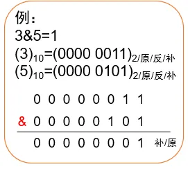
教材还给出了负数参与按位与的示例：
-3 & -5 = -7
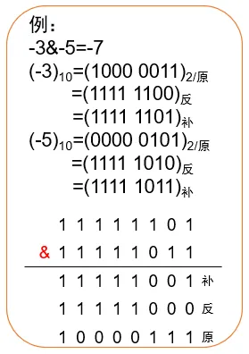
练习 2
-
表达式
0x13 & 0x17的值是 _________。答案：19
-
若
x = -2，y = 3，则x & y的结果是 _________。答案：2
-
若
x = -2，y = -3，则x & y的结果是 _________。答案：-4
按位或 |
运算规则：
两个位只要有一个为
1，结果就为1。
真值表：
| A | B | A | B |
|---|---|---|
| 0 | 0 | 0 |
| 0 | 1 | 1 |
| 1 | 0 | 1 |
| 1 | 1 | 1 |
运算方式：
- 将数字转换成补码
- 逐位进行或运算
- 得到结果后再转换成原码，或转换为对应的十进制数
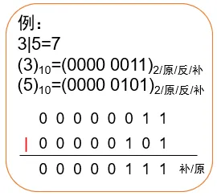
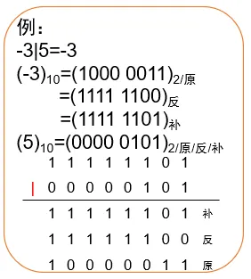
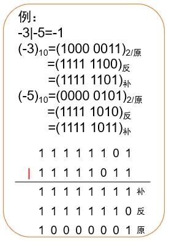
教材示例：
3 | 5 = 7
教材还给出了负数参与按位或的示例：
-3 | 5 = -3
-3 | -5 = -1
练习 3
-
表达式
0x13 | 0x17的值是 _________。答案：23
-
若
x = -2，y = 3，则x | y的结果是 _________。答案：-1
-
若
x = -2，y = -3，则x | y的结果是 _________。答案：-1
按位异或 ^
运算规则：
两个位不同为
1，相同为0。
真值表：
| A | B | A ^ B |
|---|---|---|
| 0 | 0 | 0 |
| 0 | 1 | 1 |
| 1 | 0 | 1 |
| 1 | 1 | 0 |
运算方式：
- 将数字转换成补码
- 逐位进行异或运算
- 得到结果后再转换成原码，或转换成对应的十进制数
教材示例：
3 ^ 5 = 6
-3 ^ 5 = -8
-3 ^ -5 = 6
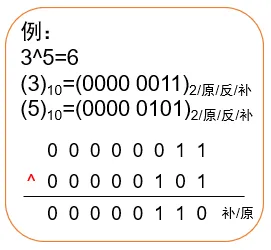
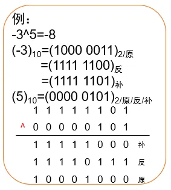
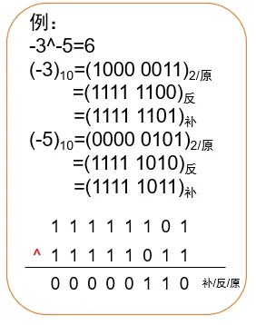
练习 4
-
表达式
0x13 ^ 0x17的值是 _________。答案：4
-
若
x = -2，y = 3，则x ^ y的结果是 _________。答案：-3
-
若
x = -2，y = -3，则x ^ y的结果是 _________。答案：3
按位取反 ~
运算规则：
0变1，1变0。
运算方式：
- 将数字转换成补码
- 对每一位进行取反
- 得到结果后再转换成原码，或转换为对应的十进制数
教材示例：
~3 = -4
~(-3) = 2
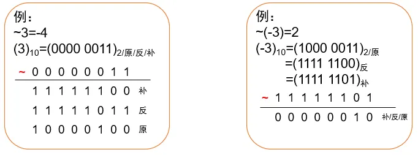
练习 5
-
表达式
~0x17的值是 _________。答案：-24
-
表达式
~-3的值是 _________。答案：2
位移运算符
位移运算是将一个运算对象的各位数字全部向左或向右移动若干位。
教材总结：
- 左移
<<：向左移动 X 位，数值大小扩大为原来的 2X 倍 - 右移
>>：向右移动 X 位，数值大小缩小为原来的 2X 倍
左移 <<
运算规则：
向左移动 X 位，数值大小扩大为原来的 2X 倍。
运算方式：
在不考虑溢出的情况下，将除符号位之外的数字整体向左移动，低位（右侧空位）补 0。
快速运算：
a << X
可按教材理解为：
a × 2^X
教材示例：
3 << 2 = 12
-3 << 2 = -12
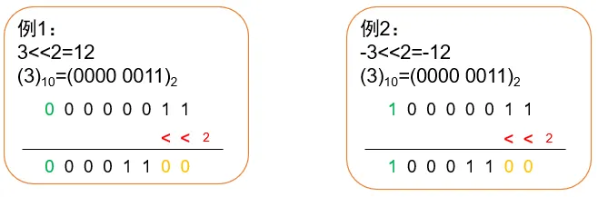
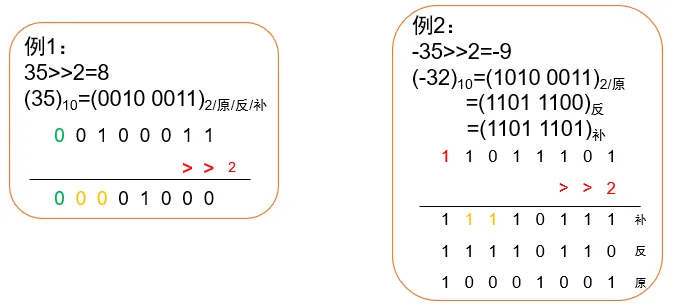
右移 >>
运算规则：
向右移动 X 位，数值大小缩小为原来的 2X 倍。
运算方式：
教材表述为：
- 将数字转换成补码
- 所有数字整体向右移动
- 高位（左侧空位）补符号位数字
快速运算：
教材按“直接除以 2X，向下取整”理解。
例如：
35 >> 2 = 8
-35 >> 2 = -9
教材特别提示负数向下取整，例如：
⌊-35.0 / 4⌋ = -9
练习 6
-
表达式
0x17 << 2的值是 _________。答案：92
-
表达式
-0x17 >> 2的值是 _________。答案：-6